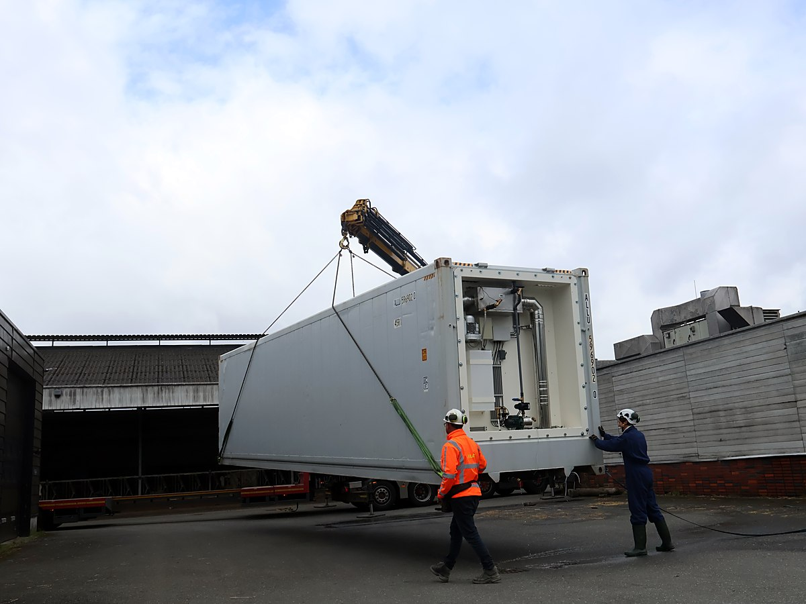
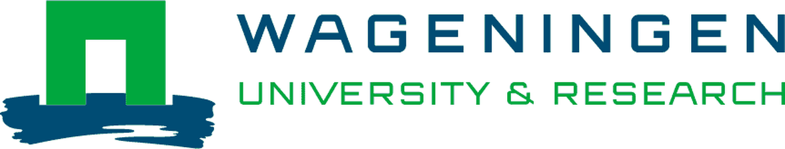
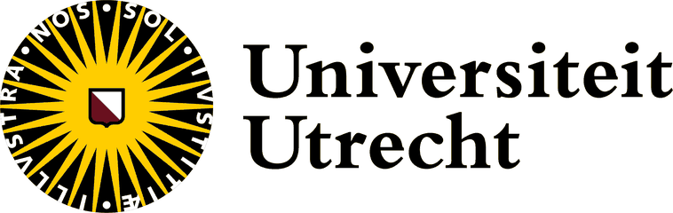
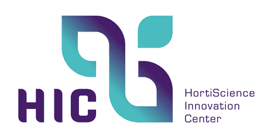
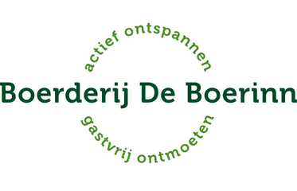
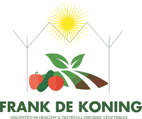
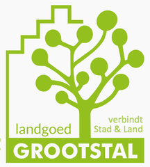
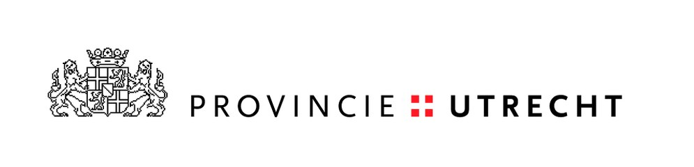
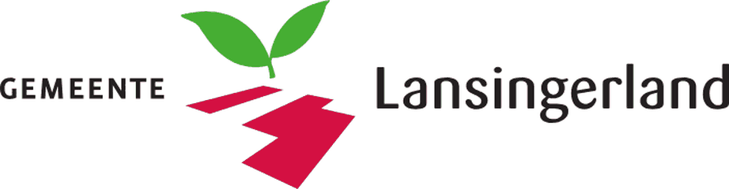
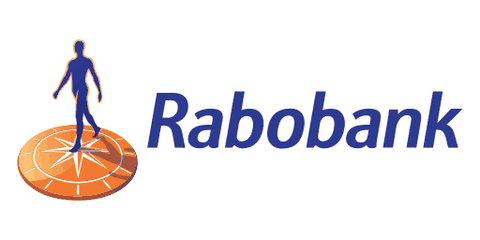

About us
Five versions on
On a farm in Germany we saw a compost heap heating a house. The principle worked, but everything around it did not. It yielded too little and it asked for too much work.
Back in Utrecht we built a prototype at the De Tolakker teaching farm, together with Utrecht University. The system stayed warm for seven months, longer than has ever been measured for a compost heating system. Five versions on, there is a container that you have placed, connect, fill and then leave alone.

All the technology now sits in one container that you have placed and connect. The only connections required are your central heating pipe and an outdoor socket. Version 5 has been running since June at the HortiScience Innovation Center.
Version 5 being installed at the HortiScience Innovation Center, June 2026.
Partners








